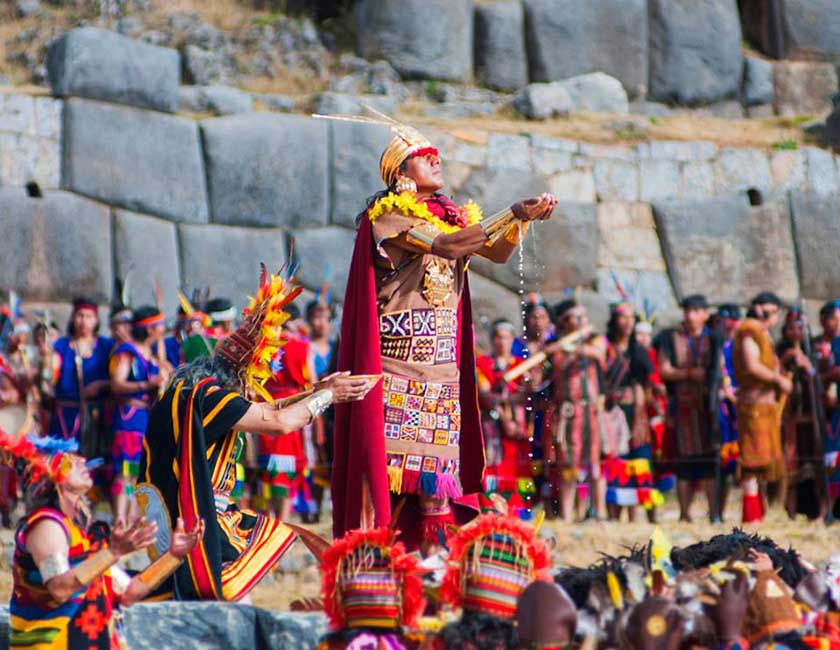
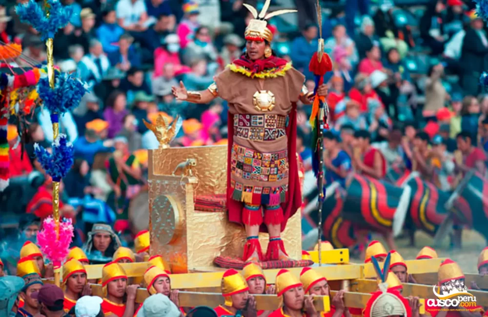
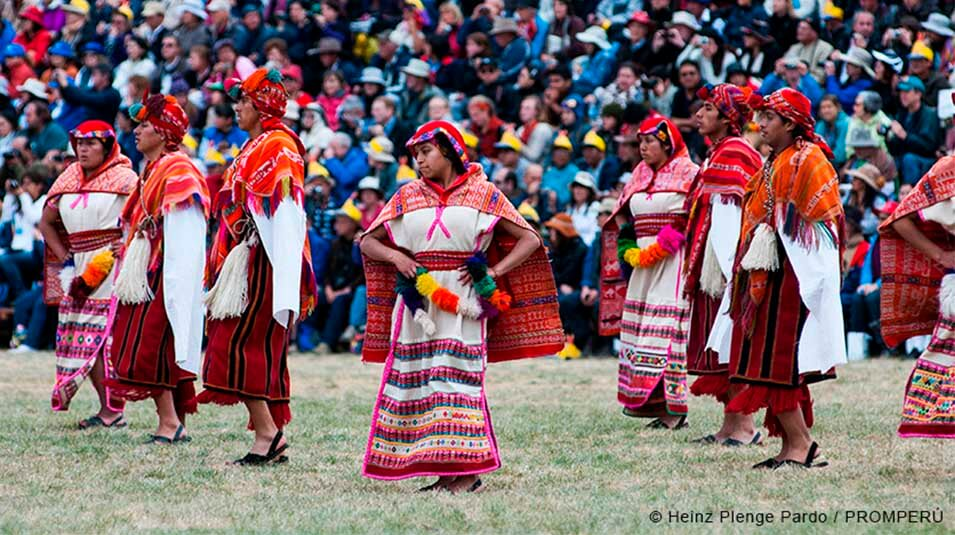
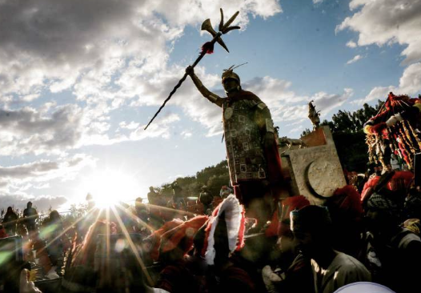

Inti Raymi: La gran fiesta del Sol en Cusco
El Inti Raymi es una de las festividades más importantes del Cusco y del Perú, celebrada cada 24 de junio en honor al dios Sol, Inti. Esta antigua ceremonia inca representa el solsticio de invierno y simboliza el renacer del sol, marcando un nuevo ciclo agrícola para los andinos.
Historia
Durante el Imperio Inca, el Inti Raymi era una celebración de gran importancia, donde el Inca y su pueblo ofrecían tributos al dios Sol en la explanada de Sacsayhuamán. Con la llegada de los españoles, la festividad fue prohibida, pero en 1944 se rescató y hoy en día es una de las representaciones culturales más emblemáticas del Cusco.




Horarios y Ubicación
- Ubicación: Plaza de Armas de Cusco, Qorikancha y Sacsayhuamán.
- Fecha de celebración: 24 de junio de cada año.
- Costo de entrada: La ceremonia en la Plaza de Armas y Qorikancha es gratuita, mientras que el acceso a Sacsayhuamán puede requerir entradas especiales.
Consejos para Visitantes
- Llega temprano: La ciudad se llena de visitantes, por lo que es recomendable llegar con anticipación para encontrar un buen lugar.
- Usa ropa cómoda y abrigadora: El clima de Cusco puede ser variable, con frío en la mañana y sol intenso al mediodía.
- Hidrátate y protégete del sol: Lleva agua, bloqueador solar y un sombrero para evitar la exposición prolongada.
- Consulta opciones de entradas: Si deseas ver la ceremonia en Sacsayhuamán, compra entradas con anticipación.
- Disfruta de la gastronomía local: Aprovecha la festividad para probar platos típicos como el cuy al horno o el chiriuchu.